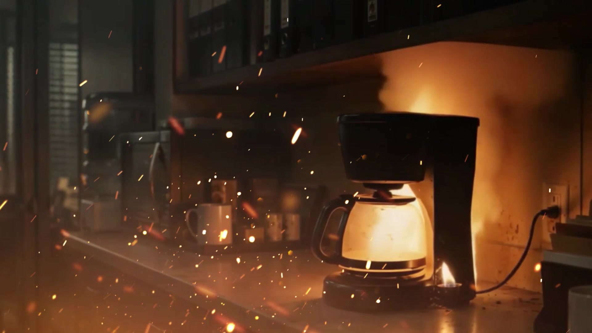
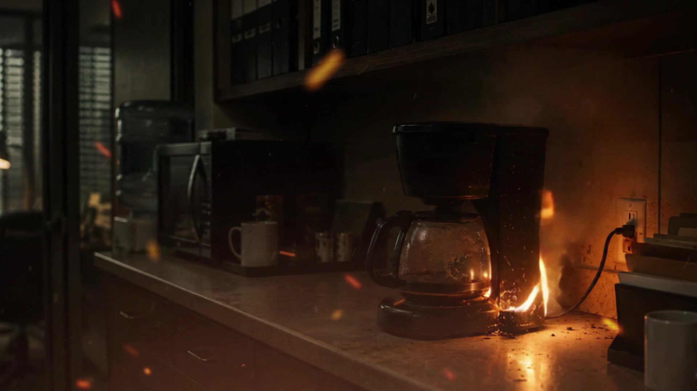

Nadie te dijo que iba a ser así
Uruguayan fiction series · 6 episodes · 20–25 minutes. Black comedy and political thriller set in Montevideo’s Old City. Created and written by Maite Piñeyrúa Segura and Guillermo Barbeito Rodríguez. Director: Maite Piñeyrúa Segura.
Logline
When a gold robbery connected to Uruguay’s dictatorship disrupts their daily lives, three young people in Montevideo’s Old City become trapped in a political plot in which every way out compromises them further.

Industry overview
Seeking now
International partner for financing + distribution
SKA Films is already attached as the Uruguayan co-production partner. The priority is to add a platform, broadcaster, buyer, distributor, sales agent or international co-producer with real financing capacity, market access and a concrete route to audiences.
Synopsis
Gonzalo (26), Luis (24) and María (24) share a house overlooking the breakwater in Montevideo’s Old City. Their life together unfolds through precarious work, friendship and a form of everyday absurdity they know all too well.
A gold robbery linked to a political episode that took place in 1980, during Uruguay’s dictatorship, pulls them into a plot connecting the present with a past that never fully disappeared. What begins as a problem close to home exposes them to interests far beyond their control, turning every decision into a new consequence.

Audience and positioning
Intended for young adult and adult audiences interested in auteur-driven serial fiction, black comedy and political thrillers.
The series starts from a specific Uruguayan and Río de la Plata identity — friendship, shared living, precarity and political memory — while using a genre combination designed to connect with regional and international audiences.
Development status
- Pilot episode screenplay available.
- Project dossier, series bible and season arc developed.
- Teaser completed.
- Director attached: Maite Piñeyrúa Segura.
- Executive producer: Malena Benavides.
- Uruguayan co-production: SKA Films / Ignacio “Nacho” Jaunsolo.
Available materials
Development materials are not published openly. They are shared upon request with buyers, platforms, broadcasters, distributors, sales agents, industry professionals, institutions and potential partners.
Available for professional review.
World, narrative proposal and team.
Development of the six-episode journey.
Completed piece presenting tone and world.
Available according to the stage of discussion.
Next steps and project needs.
Recognition and support
Support for the project’s development and professional trajectory.
Development lab for serialized projects.
Award supporting the production of the audiovisual teaser.
Maite Piñeyrúa Segura participated through an ACAU selection.
What we are looking for
We are looking for an international partner that complements the Uruguayan structure with financing, market access and a concrete distribution strategy.
- Priority: platforms, broadcasters, buyers or strategic partners with financing and distribution capacity.
- Distributors and sales agents able to build a concrete international circulation strategy.
- International co-producers bringing financing, market access and a clear sales or distribution strategy.
- Post-production or service partnerships when they are part of a broader financing and circulation structure.
Team
Maite Piñeyrúa Segura
Co-creator / co-writer / director
Co-creator, co-writer and director of the series. As director, she works on the project’s tone, characters and the tension between intimacy, everyday absurdity and political conflict.
She directed the documentary Tumbero, recognized and selected by Uruguayan festivals, and was selected by ACAU to attend Campus Málaga Talent 2025 with this project.
Guillermo Barbeito Rodríguez
Co-creator / co-writer
Co-creator and co-writer, working on narrative architecture, the project’s world and the connection between black comedy, shared living and political thriller.
As part of the creating team, he developed the project through DETOUR Series Lab and the subsequent writing, dossier, series bible, season arc and teaser stages.
Ignacio “Nacho” Jaunsolo / SKA Films
Executive co-production / Uruguayan co-production
Executive co-producer, founder and executive director of SKA Films, with experience in production, directing, cinematography and audiovisual content development.
SKA Films is part of the project’s Uruguayan co-production structure, bringing industry experience to its development, financing and circulation strategy.
Malena Benavides
Executive producer
Executive producer responsible for coordinating development, production organization and relationships with partners, institutions and professional platforms.
She also produced the documentary Tumbero. On this project, she structures priorities and supports the practical conditions required to move toward production.
Professional contact
To request materials or schedule a meeting about financing, distribution, sales or international co-production, contact the team and include your name, company or institution, and country.